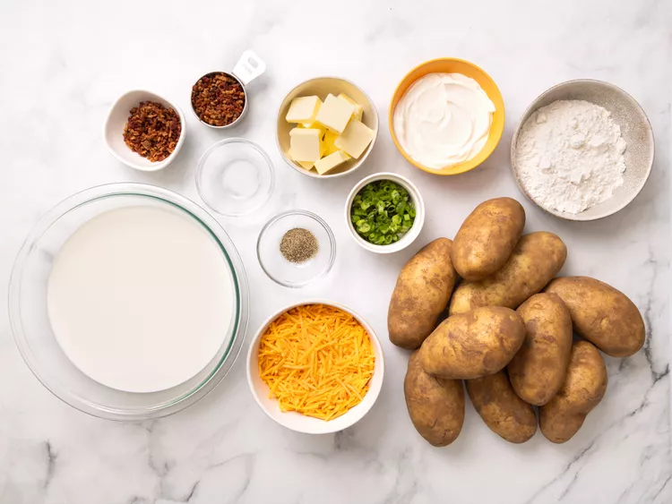
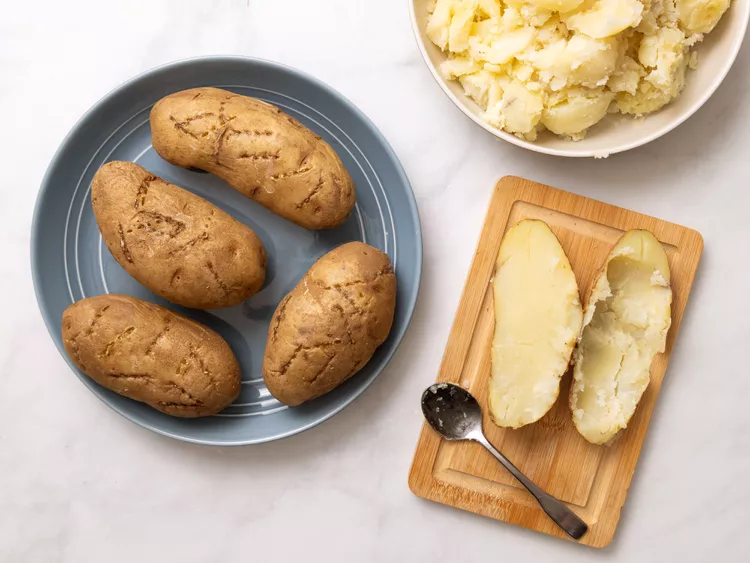
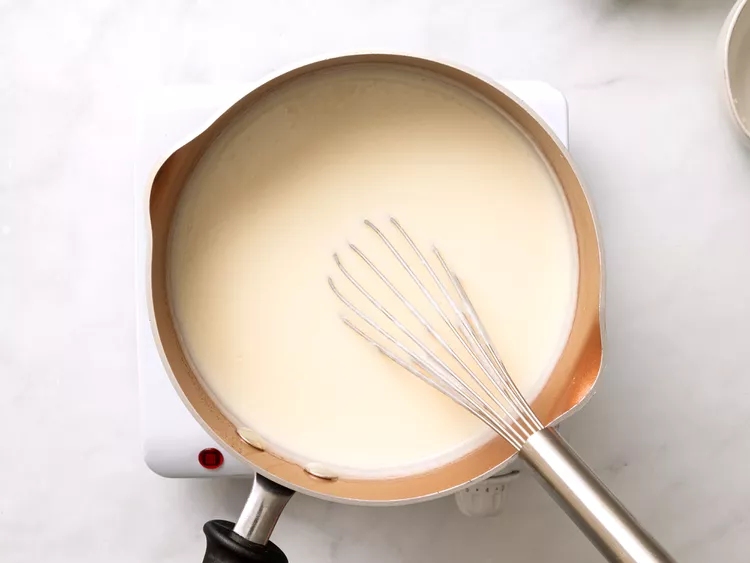
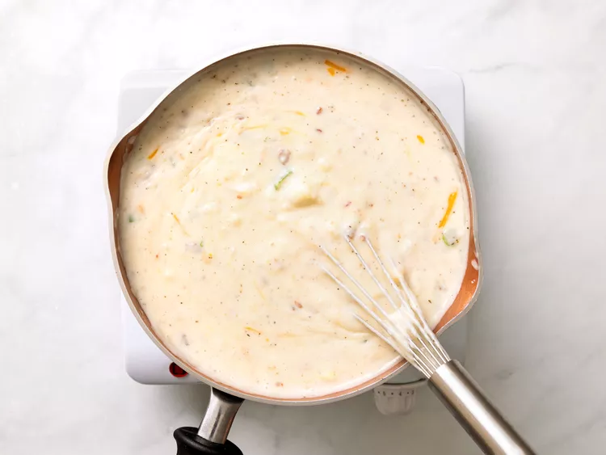

Ингридиенты:
- 2,7-3 кг картофеля
- 320 г сливочного масла
- 320 г пшеничной муки
- 3 литра цельного молока
- 1 ст. л. соли
- 2 ч. л. черного молотого перца
- 120 г жареного бекона (разделить на две части)
- 8перьев зеленого лука, нарезанных
- 570 г тертого сыра Чеддер
- 450 г сметаны
Приготовление:
-
Шаг 1
Соберите все ингредиенты.
 -
Шаг 2
Проткните картофель вилкой и запекайте в микроволновке партиями по 3–4 штуки до мягкости (примерно 7–8 минут). Дайте остыть, затем выньте мякоть.
 -
Шаг 3
В большой кастрюле растопите масло на среднем огне. Добавьте муку, перемешайте и готовьте около минуты. Постепенно вливайте молоко, постоянно помешивая, пока масса не загустеет.
 -
Шаг 4
Добавьте мякоть картофеля, соль, перец, 1/3 стакана бекона, 2 ст. л. зеленого лука и большую часть сыра. Готовьте, пока суп полностью не прогреется.
 -
Шаг 5
Вмешайте сметану и доведите суп до нужной температуры.
-
Шаг 6
Подавайте суп, посыпав оставшимся беконом, зеленым луком и сыром.